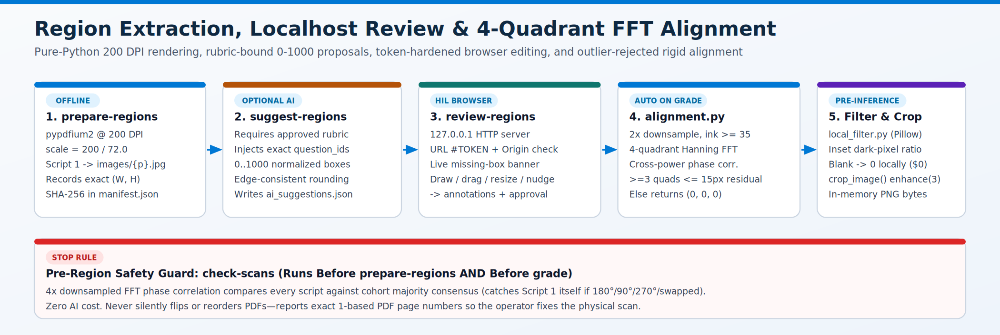
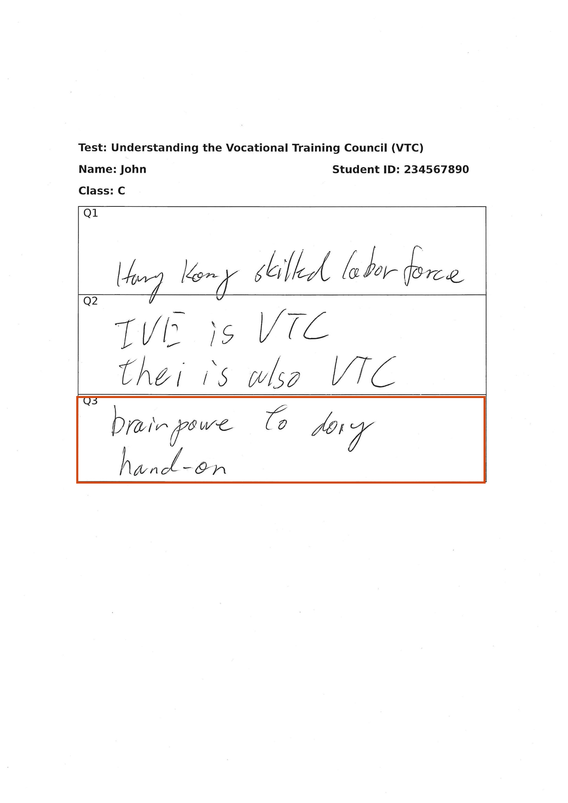

Region Extraction, Localhost Review UI, and FFT Page Alignment
Part 4 of 8 · MS MVP Technical Series · Computer Vision & Region Pipeline

A multimodal LLM cannot grade handwriting that never entered the crop. Before blaming a model for a low mark or misread ID, an engineer has to get four things right: deterministic rendering, rubric-bound region extraction, human-verified pixel coordinates, and rigid scanner alignment.
As SKILL.md makes clear, AI region suggestions are strictly optional—a local manual path is always available:
Local manual region drawing remains available
without any paid suggestion. Every page still needs human review and approval.

Figure 1. End-to-end region extraction pipeline: pure-Python pypdfium2 rendering, optional 0..1000 AI proposals, token-hardened browser review, 4-quadrant FFT alignment, and Pillow blank filtering.
1. Pure-Python 200 DPI determinism (prepare-regions)
Historically, PDF-to-image pipelines relied on pdftoppm (Poppler), creating OS-specific installation friction across Windows, macOS, and Linux and subtle pixel-rounding differences. prepare-regions uses pure-Python pypdfium2 at 200 DPI (scale = 200 / 72.0), rendering Script 1's pages into regions/images/{page}.jpg and recording exact (width, height) dimensions (1654 × 2338 in our example) and SHA-256 digests in regions/manifest.json.
Before running prepare-regions, the operator runs check-scans (covered in Part 1) so an upside-down Script 1 never corrupts the template layout for the whole cohort. Later, Microsoft Agent Framework's ValidateApproval Executor verifies these approved region boxes before any grading call runs.

Figure 2. Real read-only check-scans output. A rigid alignment transform cannot fix a swapped page.
2. Rubric-bound region extraction (suggest-regions)
If the teacher opts into AI region proposals (suggest-regions --confirm-cost), Python refuses to run until rubric/approval.json exists. Why? Because suggestions.build_prompt() dynamically injects the exact approved question_number list and short question summaries into suggestions.PROMPT (and hashes question_ids into the opt-in cache key):
Identify answer and metadata regions on this scanned exam page.
For metadata fields (NAME, ID, CLASS):
- The bounding box MUST enclose the handwritten/input value area (the blank line, box, or write-in space where the student writes), NOT the printed label text (such as "Name:", "Student ID:", or "Class:").
- For NAME: Allocate generous horizontal width across the entire designated answer line/blank to accommodate variable student name lengths.
- For ID and CLASS: Enclose the complete write-in area or box designated for the student's ID and class.
- Use exact labels "NAME", "ID", and "CLASS".
For question answer areas:
- Expected question IDs from the marking rubric: {question_ids}.
{question_details}- Return ONE bounding box enclosing the complete student answer area/table for each expected question ID that appears on this page.
- Use ONLY the exact question ID labels listed above. Do NOT invent, rename, or subdivide labels beyond that list.
- Do not include printed question instructions or titles in the answer box.
Coordinates must use a normalized 0-to-1000 scale: x and y are the top-left corner, and width and height are the box dimensions. Ensure all boxes lie entirely inside the page. Return an empty list if no regions can be identified.
Notice the engineering details:
- Normalized 0..1000 coordinates: Decouples the vision model from raw JPEG resolution.
- Edge-consistent pixel conversion: Python converts normalized boxes to integer pixels at the edges (right - left rather than rounding width independently), preventing 1-pixel drift:
left = round(box.x * page["width"] / 1000)
top = round(box.y * page["height"] / 1000)
right = round((box.x + box.width) * page["width"] / 1000)
bottom = round((box.y + box.height) * page["height"] / 1000)
- Metadata isolation:
NAME,ID, andCLASSare retained only on template page0, and negative/out-of-bounds boxes are rejected before writingai_suggestions.json(never overwritingannotations.json).

Figure 3. Saved 1654 × 2338 template page with approved boxes (NAME, ID, CLASS, Q1–Q3).
3. Token-hardened localhost review UI (review-regions)
handwriting-grader review-regions --exam exam.yaml starts a zero-dependency local HTTP server (editor.py) bound to 127.0.0.1 with:
- A random bearer token passed in the URL fragment (#TOKEN) so it never leaks to HTTP Referer logs.
- Strict Origin header validation to block cross-site requests from other browser tabs.
- Auto-loaded AI suggestions, zoom/pan, drag-to-draw, resize handles, keyboard nudging (Arrow / Shift+Arrow), and a live missing-box banner checking that ID is on page 0 and every rubric question is present before "Approve all regions" writes regions/approval.json.
4. Coordinate scale discipline & crop reconstruction
In our VTC example, John's Q3 box in 1654 × 2338 template space is:
{
"x": 222,
"y": 1153,
"width": 1191,
"height": 254,
"label": "Q3"
}
When overlaying boxes onto a 150-DPI publication export (1241 × 1754), you must scale X and Y independently—mixing coordinate spaces is a classic debugging trap:
sx = display_width / original_width
sy = display_height / original_height
display_box = (
round(x * sx),
round(y * sy),
round((x + width) * sx),
round((y + height) * sy),
)

Figure 4. John's saved grading page (script index 2) with the Q3 boundary highlighted.

Figure 5. Reconstructed Q3 crop (1191 × 254 px) showing a second line ("hand-on") that the historical transcription missed.
5. 4-Quadrant FFT page alignment (alignment.py) & blank pre-filtering
Physical scanners introduce vertical/horizontal shifts and slight skew. During grade (and retry-grading --align-images, which re-renders from the original PDF into grading/alignment-history/recovery-*/ rather than re-warping JPEGs), alignment.py registers every scanned page to regions/images/{page}.jpg:
- Downsamples 2x, converts grayscale to ink intensity (
255 - pixel), and thresholds weak noise (< 35). - Applies a Hanning window to each of the four page quadrants and computes normalized FFT cross-power phase correlation:
fa = np.fft.rfft2(ref_patch * win)
fb = np.fft.rfft2(cur_patch * win)
cross_power = fa * np.conj(fb)
cross_power /= np.maximum(np.abs(cross_power), 1e-8)
cc = np.fft.irfft2(cross_power, s=ref_patch.shape)
- Fits a rigid transform (
tx, ty, theta, bounded to±150 pxand±5°) across the four quadrant peaks and rejects outliers—requiring at least three positively weighted quadrants to agree within15.0full-resolution pixels:
residuals = np.hypot(
dx - (tx - theta * py),
dy - (ty + theta * px),
)
if np.count_nonzero((weights > 0.0) & (residuals <= 15.0)) < 3:
return 0.0, 0.0, 0.0
Why return (0, 0, 0) on rejection? Because a bad global warp driven by dense handwriting in one quadrant can push ID or NAME boxes off-target.
Finally, before calling Azure OpenAI, local_filter.py runs an inset Pillow dark-pixel check (ink_threshold=160, max_ink_ratio=0.0015) to assign 0 locally to clearly blank answers, and grading.crop_image() sharpens non-blank crops in memory:
def crop_image(path, box):
with Image.open(path) as image:
x, y = box["x"], box["y"]
crop = image.crop((x, y, x + box["width"], y + box["height"]))
crop = ImageEnhance.Sharpness(crop).enhance(3)
buffer = io.BytesIO()
crop.save(buffer, format="PNG")
return buffer.getvalue()
No prompt engineering can recover handwriting outside (x, y, x + width, y + height)—which is why region review and alignment come before inference.
Next: Multi-Role Azure OpenAI Routing, Multimodal Batching, and Adversarial Prompt Safety.
Implementation references: region suggestions, FFT alignment, and blank cell filter.